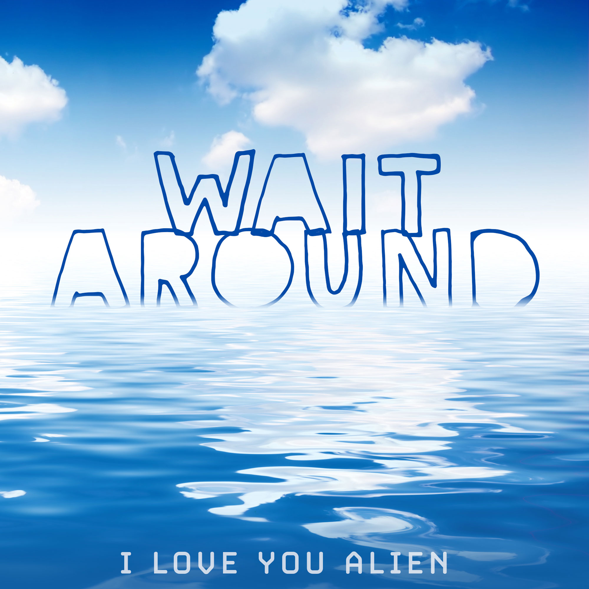

- Judas Goats
- Nugget
- Rebel Roar
- The Long View
- Concerned Residents of Kenwood Park
- You've Got a Heart
- Sunning Lasses
- Pillars and Trees
- Dream Center: Peoria
- Opening Day
This is ILYA's February 2023 album. Visit us on Bandcamp
or Spotify.
- Captivated
- Persistence
- Yard
- Who's Scrawny Now?
- Bad Words
- Gwdihw
- Impermanence
- Real Alien
- Cop Shocks
- Every Page
This is ILYA's February 2022 album. Visit us on Bandcamp
or Spotify.

- Fuel Up
- Pushin'
- Wait Around
- Warp Speed
- Peru LaSalle
- Never Songs
- Off The Grid
- Prophets
- Fuzzy
- The Last One
This is ILYA's February 2021 album. Visit us on Bandcamp
or Spotify.
Here's the February 2020 release, Stolen Valor:
- Atlas Of The World
- Icicle Guitars
- Keep Going
- Where
- King Bullflight
- Fuzzy Logic
- Sweeps
- Kiss Revenge Bus Stop
- So Petty
- Cho Sun Ok
In 2010 our RPM Challenge was Chairs:
- The Curse
- Pipeholder
- The Holly Destroyer Always Knows What You Are Doing
- No
- Curse Redux
- Critical
- Magic Door
- Chairs
- Auto Show
- Slow Skin Tag
In maybe 2008, we sounded like this and this.